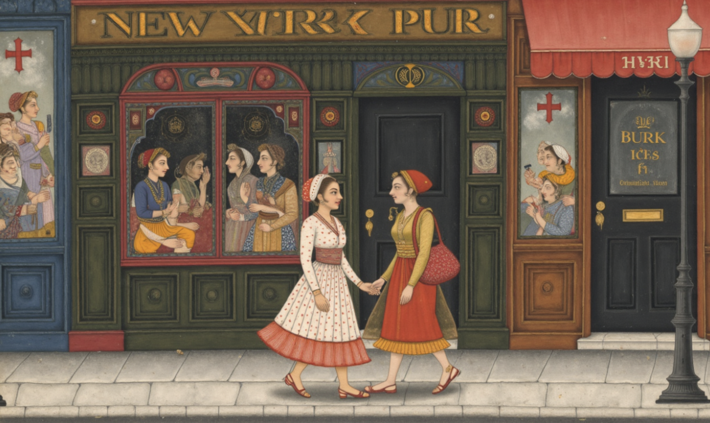
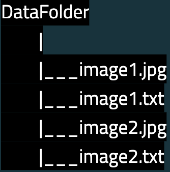
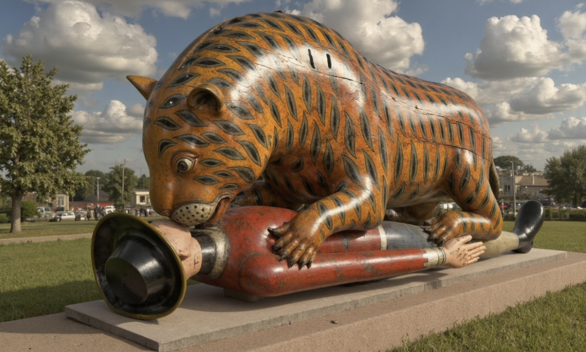

Project 2: Text-to-Image Models

Fine-tune Stable Diffusion using LoRA with 15-50 images and hand-written captions (you may 'recycle' from folder B of your pix2pix project dataset if you want).
Every caption you write is an act of teaching the machine from your perspective. This is creative work. Although from a different context, you may find this guide to writing alt-text useful.
Questions to consider:
-
What does mainstream AI miss or erase about your subject/culture/practice?
-
What knowledge do you have that isn't represented in big datasets?
-
How can this model serve you or your community specifically?
-
What does writing each caption teach you about your data?
---------------------------------------------------------
Caption Writing as Creative Work
Why hand-written captions matter: Writing captions forces you to articulate what you're teaching the AI.
Example for a cultural object:
If your token is "weave77" and your class is "tool" your captions might look like:
"a photo of weave77 tool, traditional frame loom, hands arranging warp threads"
"weave77 tool detail view, wooden construction, handmade joints visible"
"weave77 tool in workshop setting, natural light, being demonstrated"
Example for personal style:
If your token is "mystyle2024" and your class is "style" your captions might look like:
"portrait in mystyle2024 style, bold linework, limited color palette, graphic approach"
"landscape in mystyle2024 style, flat shapes, high contrast, minimal detail"
"character design in mystyle2024 style, geometric forms, strong silhouette, clean edges"
Caption Writing Tips:
-
Be specific about what makes each image unique
-
Use language that reflects your perspective
File/Folder organization:
You should have one folder with your images and .txt files.
There should be one .txt file per caption
Your image file names and .txt files should match like so:

---------------------------------------------------------
Trained Model (we'll train in class next week so skip for now)
Be ready to:
-
Show Checkpoint files from your training
-
12+ generated images (varied prompts, experimental)
-
Talk through:
-
What did you train on and why?
-
Show 3-5 example captions. What was your writing approach?
-
How does your dataset diversify what AI represents?
-
What did writing captions teach you about your subject?
-
In what context could this be used? Who is this for?
---------------------------------------------------------
Inspo:

Tipoo's Tiger as Fine-Tuned AI Image Model by Ambika Joshi (aka Computational Mama) for https://gooey.ai/beyondbias
--------------------------------------------------------
***due week 5***
Finish gathering data and training your model
In discord submit a google drive link containing:
-
12+ generated images along with prompts used (varied prompts, experimental)
-
your training images and training captions
-
a text document answering:
-
What did you train on and why?
-
Show 3-5 example captions. What was your writing approach?
-
How does your dataset diversify what AI represents?
-
What did writing captions teach you about your subject?
-
In what context could this be used? Who is this for?
-
Back to projects